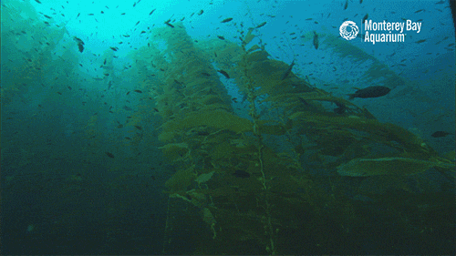

In this episode we sat down with the awesome Imche Fourie from Outset Ventures, one of New Zealand’s only incubators and investors for early-stage, deep technology start-ups. In this edited conversation, Imche spoke about her perspectives on climate and algae-tech, before giving some great advice for early-stage technology founders.
Outset's mission is to bring New Zealand’s deep technology innovations to the world stage by helping founders turn unique science and engineering-based ideas into companies that deliver real-world solutions on a global scale.
Essentially, Outset Ventures is the home of deep technology in New Zealand. We provide a physical home for early- stage startups thanks to our 4,500 square-meter lab and workshop space based in Parnell, Auckland. Alongside this space, we run a deep technology fund which invests in early-stage science and engineering based ventures. We've just wrapped up our 15th investment at the pre-seed and seed stage!
We only invest in early-stage companies. As a result, there are two main things we can assess.
Firstly, the team. Who are these people? Do they have unique insight into their area of technology? Are they technically minded? Can they envision the growth journey of this company? and how ambitious are they? We love seeing super ambitious teams.
Then there’s the idea itself. We love ideas which considerably improve existing solutions to big problems.
I’m a biotechnologist so I looked at algae-tech quite closely back in my lab days. It’s such an interesting source of energy, food, bioplastics and much more. Unfortunately, as is the case with many climate technologies, commercial implementation remains a challenge. Both investors and founders have struggled because they can’t envision how it can scale, or they underestimate the complexity of scaling up.

There's only so far that pure software innovations can get us when it comes to climate technologies. Software won’t create new energy sources for example. That's where our focus really needs to be. The heart of most climate-tech solutions needs to be science and engineering based.
Firstly, expose yourself to as many opportunities as possible. Whatever that might mean in your context, put yourself out there. You can't be found if you don't put a signal out.
Secondly, learn what curiosity feels like in your body. Then learn how to pursue the thing that sparks your curiosity. If you follow your curiosity, and pursue what you're interested in, that will open so many more interesting doors for you.

Firstly, read "The Ministry for the Future". It encourages you to envision the world or change you want to see, before considering how to create that change. The other book I recommend is "Winners Take All ", which seems antithetical to the investment world I operate in, but raises interesting points about the economic system we live in.
If you’re interested in hearing more from Imche, check out her brilliant TED talk here:
Interviewer: Peter Green